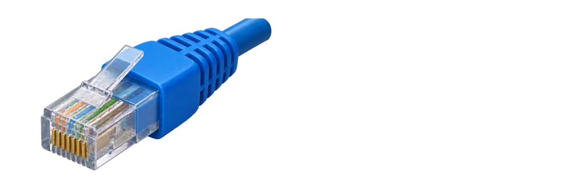

PC0 mengirim paket ke PC1
Klik tombol untuk melihat paket bergerak jelas melewati switch dan dua router.

Kabel Ethernet / RJ45Jalur siap divisualisasikanLangkah 1 dari 6: PC0
PC0 menyiapkan paket data untuk dikirim.
Paket belum dikirim.
Apa yang terjadi?
R1
R1 melihat bahwa 192.168.2.10 bukan jaringan lokal. R1 membutuhkan route menuju 192.168.2.0/24.
Next Hop
Rute pada R1 mengarahkan paket ke 10.10.10.2, yaitu interface R2 pada jaringan antarrouter.
R2
R2 mengetahui 192.168.2.0/24 terhubung langsung sehingga paket diteruskan menuju PC1.